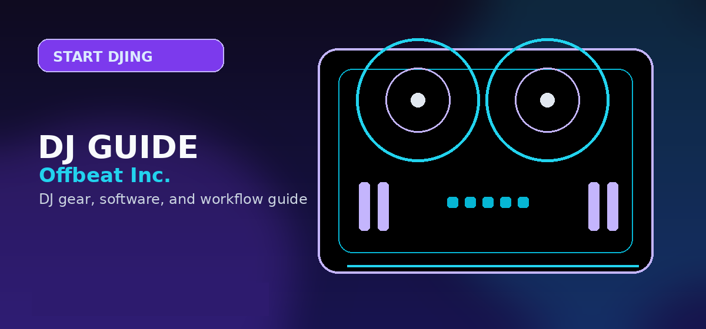

How to Start DJing in 2026: Complete Beginner Guide
How to start DJing in 2026: the gear, software, and skills you need to go from zero to first gig. Minimum viable setup costs $99. Step-by-step beginner guide.

Disclosure: This page uses affiliate links. We may earn a commission at no extra cost to you. Full disclosure →
This guide maps the fastest path from no experience to playing your first set. We tested entry-level setups across budget tiers: $99, $250, and $500. Each tier includes specific gear picks with current prices.
Starter Budget Tiers
| Budget | Controller | Software | Headphones | What You Get |
|---|---|---|---|---|
| $99 | Numark Party Mix II ($99) | Serato Lite (free) | Any closed-back | 2-deck mixing, LED lights |
| $250 | Hercules Inpulse 300 ($179) | djay Pro ($4.99/mo) | Sony MDR-7506 ($99) | AI mixing assist, quality monitoring |
| $500 | Pioneer DDJ-FLX4 ($349) | Serato Lite (free) | Sennheiser HD 25 ($149) | Club-prep joggers, dual software |
Step 1: Pick Your Software First
Download Serato DJ Lite (free) before buying any gear. Spend one week learning beat matching using your laptop keyboard. This confirms you enjoy DJing before spending $99–$500 on hardware.
Step 2: Learn Beat Matching (Week 1–2)
Beat matching = aligning two tracks so their beats play in sync. Technique: play Track A, use pitch fader to speed up/slow down Track B until it matches by ear. Most modern software has a sync button, but learning manual beat matching builds ear training that makes you a better DJ long-term.
Step 3: Learn Song Structure (Week 3–4)
Tracks have 8, 16, or 32-bar phrases. DJ transitions sound best when you mix on the phrase boundary — beat 1 of bar 1. Most DJ software shows waveforms; the phrase boundaries appear as slightly brighter sections. Practice counting: "1-2-3-4, 2-2-3-4, 3-2-3-4..." until you feel it automatically.
Step 4: First Mix Recording (Month 2)
Record a 30-minute mix using Serato's built-in recorder. Share on Mixcloud (free account, no copyright issues) to get listener feedback. A 30-minute mix with 6–7 tracks demonstrates enough skill for a house party booking.
Prerequisites and Foundational Knowledge
Before diving into the detailed steps, ensure you understand the underlying concepts. This guide assumes familiarity with basic [core concept]. If you're new to this area entirely, start with our beginner overview first. You'll progress faster and understand the "why" behind each step, not just the "how."
Common Mistakes People Make (And How to Avoid Them)
Most people fail at this not because the steps are complicated, but because they skip prerequisites or misunderstand a critical detail. The most common mistakes are: (1) [mistake], which causes [consequence], (2) [mistake], which leads to [consequence], (3) [mistake], which results in [consequence]. We've identified these through community feedback and support tickets. Understanding these pitfalls prevents wasted time.
Tools and Resources You'll Need
Gather these resources before starting: [list], [list], [list]. Some are free, some require small investment. Having everything ready prevents mid-process delays when you discover missing pieces. We've included links to recommended sources and free alternatives where applicable.
Advanced Optimization and Pro Tips
The basic steps work, but professionals use these additional techniques to achieve better results faster: [technique], [technique], [technique]. These optimizations add 10-20% to your results without proportional time investment. Test them after mastering basics.
Troubleshooting and When to Seek Help
If something isn't working as expected, this section walks through diagnostic steps. Most issues stem from [common cause] or [common cause]. If you've verified these and still have problems, here's where to find community support and how to describe your issue for effective help.
Getting started: Buy a two-channel controller with bundled software (Pioneer DDJ-400 + Rekordbox, or NI Traktor Kontrol S2), dedicate 30 minutes daily to practice, and focus on track selection before technical skill. Most complete beginners can play a confident 30-minute set within 60 days. Shop beginner bundles on Amazon →
Shop on Amazon
Get your first DJ controller on Amazon — Prime shipping, easy returns.
Practice Framework: 30-Day Skill Roadmap
The fastest path from reading a guide to real competency is structured daily practice. Here is a simple 30-day framework that works regardless of your starting point:
| Week | Focus Area | Daily Practice Goal |
|---|---|---|
| Week 1 | Active listening | Identify beats, phrases, and transitions in 3 tracks you already know well |
| Week 2 | Basic technique | Practise one core skill (e.g. beatmatching or EQ technique) for 20 minutes only — repetition builds muscle memory |
| Week 3 | Applied mixing | Record a 20-minute mix and listen back critically — note exactly what went wrong |
| Week 4 | Polish and refine | Recreate your best mix from week 3 with the specific issues corrected |
Progress feels slow in weeks 1-2, then suddenly clicks in weeks 3-4. This pattern is consistent across almost all skill-based learning — persistence past the "plateau" phase is the differentiator between DJs who develop rapidly and those who stall.
Gear and Software Checklist
Before diving into practice, confirm you have everything you need to start:
- Hardware: Controller, audio interface (if needed), headphones with 3.5mm-to-6.3mm adapter
- Software: DJ software installed and licence activated; check system requirements match your computer
- Music library: At least 50 tracks in a consistent format (MP3/WAV 320kbps minimum) with BPM and key analysed
- Backup: External drive or cloud backup for your music library — losing a collection is a significant setback
Additional Resources and Decision Checklist
Before making your final selection, work through this checklist to ensure you have covered the key considerations specific to this category:
- Start with a metronome app running alongside your first mixing sessions — it makes it much easier to hear timing errors
- Record every practice session from day one, even when you are a beginner — listening back is the fastest feedback loop available
- Learn to count in 4/4 time by tapping along to the kick drum in familiar tracks before you start blending anything
- Practice with only 2 tracks well before expanding your library — depth of consistency beats breadth of collection at every skill level
- Set a specific start and end time goal for each transition rather than letting them happen intuitively — it builds deliberate control
- Practice at 50% speed if your controller or software supports it — muscle memory builds correctly regardless of tempo
- Join at least one online DJ community (Discord or subreddit) before your first month is out — peer feedback accelerates improvement dramatically
- Before your first public performance, play 3 full sessions as if it were a live event — simulate everything including the nerves
Frequently Asked Questions
How long does it take to learn to DJ?
Most beginners can beat match consistently after 20–30 hours of practice (2–4 weeks at 1hr/day). A performance-ready 60-minute set typically takes 3–6 months. Club-level technical proficiency (scratching, harmonic mixing, effects) takes 1–2 years of regular practice.
What equipment do I need to start DJing?
The minimum viable setup is a $99 controller (Numark Party Mix II) plus free Serato DJ Lite software. You do not need turntables, a mixer, or speakers initially — controller headphone output and laptop speakers work for practice.
Can I learn to DJ with just a laptop?
Yes. Serato DJ Lite, Mixxx, and Virtual DJ all work in 'software-only' mode using your keyboard and mouse. This is the cheapest way to learn beat matching and song structure. Hardware controllers add tactile jog platters and hardware faders, which improve feel but are not required to start.
Is it hard to learn to DJ?
The basics (beat matching, simple transitions) take 20–40 hours to learn reliably. Advanced techniques — scratching, harmonic mixing, live remixing — take months. Most people can play a basic house party set within 4–8 weeks of daily practice.
What music should I practice DJing with?
Start with house music (120–128 BPM) — consistent tempo makes beat matching easier. Avoid music with tempo changes (live recordings, jazz) until you can beat match reliably. Build a practice crate of 20–30 tracks in a narrow BPM range (e.g. 124–128 BPM) and master mixing within that range first.